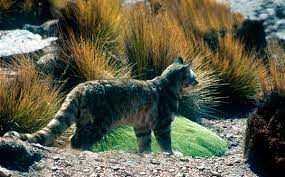
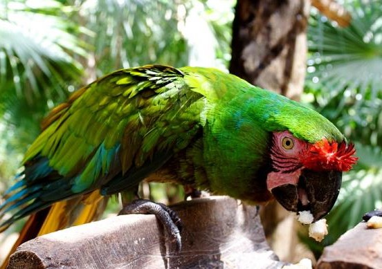

Bolivia es uno de los países con más biodiversidad del mundo, lo que se conoce como megadiversidad, y de hecho se encuentra en el séptimo puesto en cuanto a este parámetro. Pero al igual que pasa en casi todo el mundo, muchas de estas especies se encuentran en peligro de extinción debido a varias actividades, la mayoría de los problemas debido a los seres humanos.
Fauna en Bolivia
La fauna natural boliviana puede clasificarse en torno a cuatro regiones diferentes,al igual que la flora, la fauna depende estrechamente de las condiciones climatológicas e hídricas de cada región.
I. DISTRITO ANDINO
El grupo zoológico más importante esta constituido por los camélidos: guanaco, vicuña, llama y alpaca. Los dos primeros no fueron domesticados y están en proceso de extinción por la caza indiscriminada que han sufrido. La llama, en cambio, esta extendida por todo el altiplano, calculándose su total en 1.500.000 ejemplares. La alpaca, de lana más fina. Prefiere los lugares pantanosos. Se estima su número en 600.000 individuos.
Entre los roedores tenemos vizcachas y chinchillas que vivían en las cordilleras del altiplano y que están prácticamente extinguidas; en cambio proliferan los ratones (ratón chinchilla del Sajama, el tejo del altiplano).
También prácticamente extinguidos están los ciervos andinos y los avestruces como el surí. Entre las aves que aun escapan a la extinción tenemos el cóndor, los flamencos y los picaflores.
II. DISTRITO SUBANDINO
Por tener una densa población humana, la fauna natural escasea. Con todo tenemos al zorro colorado, el jucumari (oso de anteojos), el anta, el gato montés (oso collo).
III. DISTRITO TROPICAL
Su fauna ha sido inmisericordemente exterminada en las últimas décadas. Anteriormente los saurios poblaban por millones el oriente, existiendo las 16 especies conocidas en el continente; hoy solo quedan cuatro especies. Algo similar ocurre con los felinos, que rápidamente se están extinguiendo, y entre los cuales tenemos: el jaguar, el puma, el gato montés, el ocelote. Otros mamíferos son el oso hormiguero, el perezoso, el tejon, el tatú, el puerco-espín, el taitetú, la urina, ciervos, antas, monos, etc.
Asimismo existe una gran variedad de reptiles siendo famosa la sicuri, víbora gigante que alcanza hasta los 10 metros.
IV. DISTRITO CHAQUEÑO
Entre su fauna mencionaremos: el armadillo gigante (tatú), la urina o ciervo pequeño, el perezoso, chaco de monte o pecarí, y los avestruces o ñandúes.
Para concluir conviene referirnos a la fauna ictiológica más corriente de Bolivia.
- Rata chinchilla boliviana (Abrocoma boliviensis)
- Tití emperador (Saguinus imperator)
- Falso vampiro (Vampyrum spectrum)
- Delfín boliviano (Inia boliviensis)
- Ñandú o avestruz andino (Pterocnemia pennata)
- Escarabajo satanás (Dynastes satanas)
- Gato andino (Leopardus jacobita)
- Guanaco (Lama guanicoe)
- Pecarí quilimero (Catagonus wagneri)
- Puma o león de montaña (Puma concolor)
- Oso andino (Tremarctos ornatus)
- Guacamayo verde (Ara militaris)
- Cóndor andino (Vultur gryphus)
- Cómo podemos ayudar a los animales en peligro de extinción en Bolivia
Rata chinchilla boliviana (Abrocoma boliviensis)
Descripción:
Tiene el pelaje dorsal y ventral oscuro; el dorso es marrón-plomizo y el vientre tiene pelos blanquecinos lo que le da una coloración más clara. Tiene la cola larga, más que un 60% de la longitud cabeza-cuerpo (141 mm); peluda y con el tercio distal con varios pelos de más de 5 mm de largo. Tiene la cabeza relativamente más pequeña y la contextura general más delgada.
Historia natural:
La historia natural de A. boliviensis es desconocida. Es herbívoro como las demás especies en el género. El hábitat del espécimen colectado por O. P. Pearson fue descrito como vegetación baja y densa (quizás compuesta de arbustos y árboles pequeños) con parches de bosque nublado. El espécimen fue capturado sobre la cresta de una colina con roquedales, arbustos, pastos y varias suculentas, algunas orquídeas y helechos. Visitas posteriores a esta área por Anderson en 1984 y 1987, revelaron que la intensidad del uso humano del área era claramente mayor; no había evidencia del bosque nublado ni de suculentas ni de helechos. El área estaba fuertemente pastoreada por ganadería y había muy poco pasto. Los árboles eran menos y más pequeños. Había áreas cultivadas tanto en las colinas como en el fondo del valle.
Distribución:
Se conoce al momento de dos especímenes de la localidad de Comarapa, Provincia Manuel María Caballero del departamento de Santa Cruz, a 1815 m de altitud. El espécimen tipo fue colectado en 1926 por E. B. Steinbach y un segundo espécimen fue colectado en 1955 por O. P. Pearson a 8 km por el camino al oeste de Comarapa. Estas dos localidades están ubicadas a una distancia de 8,8 km en línea recta. Un tercer espécimen identificado como A. boliviensis fue colectado el 2004 en el Área Protegida Municipal Serranía Parabanó, Municipio de Cabezas, departamento de Santa Cruz. Este último espécimen está actualmente en revisión.
Amenazas:
Esta especie se encuentra en peligro crítico; debido a la intervención humana en su hábitat, con el fin de habilitar el bosque húmedo montano para los usos ganaderos y agrícolas. Las observaciones de Anderson en 1984 y 1987 revelan que la intervención humana en el hábitat de A. boliviensis no es reciente y por tanto impone un riesgo de extinción grande sobre esta especie. Además, esta área está muy cercana a una ruta troncal del país y por tanto propensa al flujo constante de nuevos asentamientos humanos con una consecuente intervención humana del hábitat.
Reproducción:
El período de gestación es de aproximacamente 115 días y de una 1 o 2 crías por camada.
Se alimenta principalmente de brotes, arbustos, y la corteza.
Siendo muy parecido a la piel de chinchilla, Abrocoma piel se vende en el mercado para una pequeña ganancia.
No existen efectos adversos conocidos de rata chinchilla de Bolivia en los seres humanos.
Estado de Conservación:
Rata chinchilla bolivianos aparecen como vulnerable en la lista roja de la UICN de especies amenazadas.
Tití emperador (Saguinus imperator)
Descripción:
Tití emperador son por lo general su cuerpo alcanza 25 a 30 cm de longitud y su cola no prénsil mide de 35 a 41 cm. Pesa entre 300 y 500 gr. a la edad madura. Existen característica física más distintiva es su largo, bigote blanco, caída. Los tamarinos emperadores generalmente tienen un pelaje gris oscuro o negro con capas amarillas en la espalda y un pecho de color marrón-rojo y la cola. Tamarinos Emperor tienen garras en todos los dedos y de los pies con la excepción del dedo gordo, que tiene una uña.
Distribución:
Tití emperador se encuentran en la cuenca del Amazonas suroeste. Los países de origen son el sureste de Perú, Bolivia noroeste y noroeste de Brasil. Cuencas fluviales en Perú, como el Acre, Purus, Juruá y tienen poblaciones de tamarinos emperadores.
Hábitat:
Tamarino Emperador se encuentran en diversos tipos de luz, seco de fondo para terrestre densos bosques amazónicos. Hay territorios se encuentran en zonas de 75-100 hectáreas de bosques abiertos. Micos Emperador normalmente habitan en los árboles por debajo de 80-95 pies.
Dieta:
La gran mayoría de la dieta emperador tamarinos consta de materia vegetal. También se sabe que comen frutas, savia de árboles, insectos y pequeños vertebrados. De vez en cuando se roban los nidos de los pájaros de los huevos. Los tipos de insectos que se alimentan incluyen langostas, escarabajos, mariposas, arañas y hormigas. Los pequeños vertebrados como lagartijas y ranas. El pequeño tamaño de la tití emperador les ayuda a comer alimentos que otros grandes primates son capaces de obtener.
Comportamiento:
Los tamarinos emperador son activos durante el día y se están moviendo constantemente. Debido a su pequeño tamaño, son muy ágiles y pueden moverse de rama en rama con grandes saltos y movimientos bruscos. Son muy juguetones, cariñosos y primates cuando se mantiene en cautiverio encanta ser la mascota de los seres humanos. Se encuentran generalmente en grupos que consisten en hasta otros quince miembros. A menudo, el tití emperador se encuentra viviendo en otros grupos de tití emperador.
Reproducción:
En un grupo emperador Tamarin, varios de los miembros de la madurez sexual. Por lo general, los dos más viejos hombres y la más antigua de las mujeres son los miembros responsables de la reproducción. El período de gestación de 140-145 días pasados, dando por lo general dos, a veces tres jóvenes.
Todos los hombres en el grupo de padre o no, ayudar a la madre durante el parto y el cuidado de la joven después de mucho tiempo. Micos emperador son sexualmente maduras a la edad de 16 a 20 meses.
Adaptaciones:
Dos tercios de los tamarinos emperadores femeninos son trichomats, ven tres colores. Este tipo de visión permite a las mujeres tener un tiempo más fácil detectar la fruta madura. El resto de las hembras y todos los machos son dicrómatas, sino que sólo detectan dos colores que les dan una ventaja detectar depredadores y presas que están camuflados.
Su peso ligero y pequeño tamaño les permite llegar a los extremos de las ramas y ramitas, donde los grandes monos no son capaces de hacerlo. Su estatura también les permite ser rápidos y furtivos "saltadores" ayudando a atrapar a sus presas y escapar de sus depredadores.
Su cola (que es más largo que su cuerpo) actúa una quinta parte por las ramas de agarre.
Micos Emperador tienen dedos más largos que sus familiares, que ayudan en el robo de sus presas en lugar de tener que sondear trey en los árboles.
Sus garras se cree que son una adaptación a su entorno en lugar de un rasgo transmitido de sus antepasados filogenéticos.
Es común que los tití emperador para tener una relación mutualista con silla de montar micos. Micos emperador viven en los niveles más altos del dosel de la selva y ver el peligro desde arriba. También lave presa hasta los niveles más bajos para los saddlebacks. Los tamarinos Saddleback en protección retorno oferta a los tamarinos emperadores mediante la detección de los depredadores desde abajo.
Conservación:
Tití emperador se considera que están en peligro o amenazadas en Brasil y Perú, pero en otras áreas de su bioma terrestre, sin embargo, en otras áreas de la UICN clasifica su estado como indeterminados. Inicio de sesión por los seres humanos es la razón principal por la que están en peligro.
Varios:
Emperador tití fueron nombrados después el Emperador de Alemania, el emperador Guillermo II, debido a la gran bigote, blanco caída. Zoólogo suizo Goeldi dio la especie el nombre de "emperador" como una broma, sin embargo, el nombre se quedó.
Micos emperador han llegado a vivir hasta 20 años.
Falso vampiro (Vampyrum spectrum)
Vampyrum es un género de murciélagos filostómidos que contiene una sola especie, el murciélago espectral (Vampyrum spectrum). Algunos nombres alternativos para esta especie son falso vampiro, falso vampiro de Linneo, y murciélago vampiro espectral. Sin embargo, no están relacionados con la familia del Viejo Mundo de los murciélagos carnívoros que se encuentran en Megadermatidae que también son llamados falsos vampiros.
Descripción:
Es el murciélago más grande del Neotrópico y el murciélago carnívoro más grande en el mundo, puede llegar a medir hasta 1m con las alas extendidas y pesar hasta 200 gr. Tiene el pelaje largo y suave de color café claro a café rojizo, las orejas son largas y redondeadas; presenta una hoja nasal larga, no tiene cola y las patas y uñas son largas y poderosas.
El hocico es largo y estrecho, y los dientes son fuertes. Las partes inferiores suelen ser pálidas, gris-marrón a amarillo-marrón, la piel es mucho más corta que en la parte posterior.
Es un cazador formidable en la noche, ésta especia depredadora de gran tamaño tiene una gran variedad de vertebrados relativamente grandes como presas incluyendo anfibios, reptiles, pequeños pájaros, (mas como les detectan mientras duermen sigue siendo un misterio) y pequeños mamíferos (incluyendo otras especies de murciélagos). Los insectos también son incluidos, especialmente grandes grillos, cigarras, etc.
La gama de las especias están en el sur de México a Perú y Ecuador hasta el centro y el norte de Brasil, Surinam, Guyana, Venezuela y la isla Trinidad.
Cuando cazan, éstas especies son extremadamente cautelosas. A menudo se abalanzan desde una posición sobre una rama por encima de su presa o vuelan como un búho, patrullando un lado a otro a lo largo de los bordes del bosque, dejándose caer en el pasto. Uno es producido por año, y la madre es muy atenta y gentil con sus crías. El macho siempre está presente y duerme con frecuencia con la madre y el joven envueltos completamente en sus alas. Ocasionalmente son cazados por lechuzas mientras sondean el bosque en busca de presas y las crías son cazadas por serpientes asi como por otros murciélagos.
Historia natural:
Es un murciélago que puede estar solo o en pequeños grupo, pudiendo ser además monógamo. Es carnívoro, se alimenta de pequeños vertebrados como aves, roedores, lagartijas, otros murciélagos y raras veces frutas. Por los registros se asume que ocupa hábitats como bosques secos, sabanas inundables, sabanas arboladas y yungas.
Distribución:
Se distribuye desde Veracruz, México; norte de Guatemala; sur de Belice; Guainas, Ecuador, Perú y norte de Bolivia hasta el norte y suroeste de Brasil. En Bolivia se tiene registros en los departamentos del Beni, Cochabamba, La Paz y Santa Cruz.
Amenazas:
Esta especie está considerada como vulnerable. La principal amenaza para su supervivencia es la destrucción de su hábitat por la intervención antrópica, afectando directamente sus guaridas y los sitios donde se alimenta.
Delfín boliviano (Inia boliviensis)
Delfín Boliviano, conocido comúnmente como bufeo, es uno de los más grandes delfines de río, en promedio, los machos llegan a medir 2,55 metros de longitud y pueden pesar entre160 a 180 kilogramos. Las hembras llegan a medir hasta 2,16 metros y un su peso se aproxima a los 100 kilogramos.
Presenta la frente pronunciada, ojos muy pequeños y un hocico bastante largo con unos cuantos pelos cortos, además de dentición heterodonta (es decir: tiene dos tipos de dientes, los cónicos y molares).Las aletas pectorales y caudal son anchas, la aleta dorsal asemeja una cresta baja; poseen un oído interno que se encuentra localizado detrás de la mandíbula inferior.
Una característica interesante de los bufeos es la coloración de la piel: cuando son adultos presentan una piel de colores variables en tonalidades que van desde el gris pálido al rosado intenso, esta coloración probablemente dependa de la temperatura, claridad del agua, la actividad física y la posible ubicación geográfica, de los individuos, mientras que en los jóvenes el color predominante es el gris.
Por lo general los delfines localizan los objetos por medio del sonido (ecolocalización o sonar); los sonidos básicos producidos por los delfines son chirridos, clicks, glucs y trinos.
Comportamiento:
El bufeo es diurno y nocturno, la mayoría de las veces se pueden observar individuos solitarios, aunque también pueden observarse grupos de hasta 19 individuos que pueden estar comprendidos por varios individuos machos agrupados para cazar, o hembras con sus crías.
Los estudios acerca de su comportamiento aún resultan escasos en Bolivia. Se estima que el tiempo de gestación es de 10 a 11 meses, después de este tiempo generalmente nace una sola cría que es destetada a los 9 a 10 meses de edad. Se puede observar hembras con crías durante todo el año, lo que hace suponer que la reproducción se realiza en ambas épocas: de aguas altas y de aguas bajas, sin embargo mayores estudios que confirmen estas teorías resultan aún necesarios.
Alimentacion: De otros peces mas pequeños.
Ñandú o avestruz andino (Pterocnemia pennata)


Distribución:
Especie de gran tamaño, de patas y cuello largos. Tiene el pico gris y la cabeza, el cuello y el dorso gris parduzco con extremos de plumas blancas. Sus partes inferiores son blancas (Rocha & Quiroga, 1996b; Quiroga, 2000). Posee tres dedos en vez de dos (avestruces). Pesa hasta 20 kg, de una altura aproximada de 95 cm (Fjeldsa & Krabbe, 1990). El macho se distingue por la cantidad de plumaje, que es mayor a la de la hembra (Mamani, 1997), dándole una apariencia de mayor estatura. En época de reproducción, el macho tiene las plumas del costado del cuerpo muy largas (casi arrastrándolas por el suelo) (Quiroga, en preparación, a).
Esta especie es conocida en los departamentos de Potosí, Oruro y La Paz. Se distribuye en la Puna Sureña, sobre los 4000 m y es endémica del Neotrópico.
Hábitat: El Avestruz andino habita en desiertos, suelos salinos, estepas arbustivas de Lepidophylum, áreas poco inundadas y bofedales (Fjeldsa & Krabbe, 1990). Es vegetariano e huidizo al sentirse perseguido. Es polígamo, en grupos de hasta 10 individuos conformados por un macho y varias hembras. Nidifica en excavaciones semiocultas por arbustos y plumas (Fjeldsa & Krabbe, 1990). La postura de huevos ocurre entre septiembre y diciembre (Pengle, 1979) o entre septiembre y enero (Del Hoyo et al., 1992), colocando varias hembras en un mismo nido de 20 a 30 huevos elípticos verde olivo. El macho es el encargado de la incubación y la crianza. Durante la incubación, este avestruz abandona el nido cuando se siente acosado (Quiroga, en preparación, a), y es agresivo durante la cría (Del Hoyo 1992). Los pollos aparecen desde diciembre hasta enero (Jonson, 1965) y son nidífugos.
Estado de conservación: El avestruz andino o Suri es una especie protegida en la Reserva Natural de Fauna Andina Eduardo Avaroa y en el Parque Nacional Sajama. Está incluida en el Apéndice I de la Convención sobre el Comercio Internacional de Especies Amenazadas de Fauna y Flora Silvestre (CITES) y dentro del Decreto Supremo de Veda General Indefinida.
Medidas de conservación: A nivel regional (Bolivia, Chile y Perú), como medidas de conservación propuestas, se ha formado la Red de Conservación del Suri (2005). Para el 2009 estuvo prevista la realización de un proyecto sobre la situación del Suri en Bolivia, con datos poblaciones globales, aspecto que se desconoce. Una meta por lograr es que la especie pase a la categoría II del CITES para iniciar proyectos de manejo sostenible.
Amenazas: El Suri es una especie rara y en peligro de extinción debido a que sus poblaciones actualmente están siendo diezmadas por un uso excesivo y no planificado. A nivel nacional, tiene dos fuertes amenazas que causan reducción en sus poblaciones: 1) la caza indiscriminada de ejemplares adultos para la extracción de plumas, materia prima para la confección de trajes folklóricos de los Suri Sicuris y Tobas. Asimismo, en los últimos años, se ha incrementado la fabricación de plumeros (Rocha et al., 2003); y 2) la recolección masiva de huevos para la venta en ferias locales y consumo interno, cuyo precio por cada huevo es de 25 a 30 Bs dependiendo la demanda (C.Quiroga, observación personal). Otra amenaza de esta especie es la destrucción de bofedales, tholares y pajonales, principales sitios de vida de la especie.
Escarabajo satanás (Dynastes satanas)
Endémica de los Yungas de Bolivia, se encuentra en las altas elevaciones de entre 900-2200m en los departamentos de La Paz y Cochabamba. Del ciclo de vida dura dos años, los adultos activos entre febrero y mayo, durante los períodos más fríos. Los varones pueden alcanzar una longitud corporal de 10 cm. Protegido por la CITES II. Proyectos de cría en La Paz para apoyar a la población están en marcha.
Distribución: Es una especie endémica de Bolivia, distribuida en los municipios de Zongo, Suapi, Chairo, Pacallo, Charobamba, Coroico Viejo, Yolosa, Santo Domingo, Florida, Villa Aspiazu, Chojlla, Chulumani, Irupana, Apa Apa y San Juan de la Miel del departamento de La Paz y en los Yungas del departamento de Cochabamba (CITES, 2010).
Altitud: La especie ocurre entre los 900 y 2000 m de altitud.
Estado de conservación: La especie ha sido incluida en el Apéndice II de CITES (CITES, 2016). La expansión de la agricultura es una causa de pérdida de hábitat para esta especie, en particular las plantaciones de árboles frutales y coca, además de que las quemas periódicas están reduciendo el hábitat de Dynastes satanas. Adicionalmente, especímenes adultos son capturados para el comercio internacional. No existen medidas que garanticen un manejo sostenible de esta especie, aunque algunos proyectos piloto de recolección se están implementando en algunas localidades de su área de distribución (CITES, 2010).
Gato andino (Leopardus jacobita)

El gato andino (Leopardus jacobitus), también conocido como chinchay, gato lince u osjo, es una especie de mamífero carnívoro de la familia Felidae. Es uno de los felinos menos conocidos y es considerado como la especie más amenazada del continente americano.
El gato andino es natural de América del Sur. Su distribución se limita a las regiones montañosas de los Andes; al centro y sur del Perú y al norte de Bolivia y en Chile y Argentina.
Descripción:
De longitud llega a alcanzar de 60-80 cm, más la cola de unos 35 cm; la altura a los hombros 35 cm; pesa entre 4 y 7 kg; con pelaje largo, en especial en la región dorsal; con un diseño de manchas color café o rojizo de forma variable (fajas, estrías, puntos) sobre un fondo plomizo o grisáceo; a veces llega a aspecto atigrado con fajas verticales paralelas bajando del dorso a los flancos. la cola fajada con siete a nueve anillos oscuros, la punta blanca, igual que la parte ventral, salpicado por puntos negros: patas, mejillas, labios, zona periocular. Las orejas son grandes y ligeramente redondas, las patas robustas, manchadas de color negro,con plantas de color café.
Hábitat:
Habita en zonas de vegetación no muy alta o espesa, así como en las estepas y áreas rocosas. Se le documenta desde los 3000 a 5000 msnm, tal vez más alto, por encima de la línea de árboles, aunque a mayor latitud disminuye su rango altitudinal, llegando en la provincia argentina de Mendoza el extremo austral de su geonemia a habitar por debajo de 2000 msnm.
En esa provincia argentina se ha señalado la presencia de la especie en la reserva privada Villavicencio y se considera de valor la propuesta de anexar como nueva reserva el ambiente de Paramillos de Uspallata por ser muy probable zona de presencia del gato andino entre los 2500 y 3000 msnm.
Aunque vive solo en la alta montaña, los valles habitados por humanos actúan como barreras, fragmentando la población, significando que aún bajos niveles de caza furtiva pueden ser devastadoras. Es frecuentemente matado en Chile y en Bolivia debido a supersticiones.
Conducta:
Muestra un comportamiento tranquilo y,al parecer no se siente perturbado por la presencia humana ya que tolera la cercanía de observadores sin mostrar mayor temor. Reacciona agresivamente frente al zorro chilla, erizando los pelos del lomo, probablemente porque es un competidor trófico.
Dieta:
Se alimenta de roedores de pequeño y mediano tamaño de los géneros Abrothrix, Chinchilla, Lagidium, Ctenomys, y Phylotis, entre otros, además de aves acuáticas, terrestres, huevos y reptiles.
Investigación:
En 2004, los investigadores por primera vez pudieron poner un radio-collar en uno de estos animales para poder seguir sus movimientos. Mucha gente en los Andes cree que matar a un gato andino trae mala suerte. Sin embargo, si un cuero de este gato es encontrado o heredado, se considera una prenda de gran valor, y los cueros rellenos son utilizados en ceremonias y fiestas tradicionales.
Uso comercial del animal: piel, para la fabricación de prendas de vestir (abrigos…) y objetos ornamentales (alfombras…)
Guanaco (Lama guanicoe)

Los guanacos son muy parecidos a sus parientes: la vicuña, la llama y la alpaca, tanto así, que a veces los confunden. Las diferencias están en el color (beige en la parte superior y blanco en la parte inferior) y el largo de su lana, también en el comportamiento y en las formas características de su cuerpo.
Tienen gran talla, llegando a medir hasta 1.40 metros, su forma es esbelta y presenta una cabeza pequeña.
Ocupan zonas semi-desérticas, estepas, sabanas, planicies, pie de montes y montañas. A pesar de sus preferencias por lugares secos y abiertos, están bien adaptados a los bosques húmedos, evitando las áreas rocosas y de altas pendientes. Se los puede observar en Argentina, Bolivia, Chile y Perú.
Son herbívoros por excelencia, consumen gramíneas.
Una característica de los guanacos es que tienen la cabeza oscura y la parte ventral y las patas de color más blanquecina. El guanaco norteño es el antecesor de la llama. El promedio de vida del animal es de 20 a 25 años.
El guanaco puede correr a unos 50 km/h. La velocidad es importante para su supervivencia, debido a que en los lugares abiertos donde viven no hay donde esconderse fácilmente. Su principal depredador es el puma.
Los guanacos son conocidos por su gran habilidad para escupir, tanto saliva como hierbas que puedan estar masticando.
Distribución geográfica:
Habita sólo en América del Sur, con poblaciones en todo el oeste de la Argentina y de Bolivia, gran parte de Chile, y poblaciones menores en el oeste de Paraguay y Perú.
Cuando los europeos llegaron a Sudamérica, estimaron su cantidad en 500 000 ejemplares.
Por efecto de la cacería descontrolada y el deterioro de su hábitat hay zonas en las que el guanaco es considerado una especie en peligro, ya que son cazados por su carne, cuero y lana. En la región alto andina y puneña las poblaciones son pequeñas, encontrándose en muchos casos en una disminución progresiva de sus números.
Pecarí quilimero (Catagonus wagneri)
El chancho quimilero (Catagonus wagneri) , también llamado chancho solitario y pecarí chaqueño, está en peligro de extinción según la IUCN.
Poblacion
Esta especie de cerdo salvaje ha desaparecido de grandes áreas en Argentina, donde su área original se ha visto reducida en aproximadamente un 40 %. Su área de distribución también se ha visto reducida en Bolivia y en el este de su área de distribución en Paraguay.
La población total es desconocida, aunque probablemente persistan varios miles entre Argentina y Bolivia, y para Bolivia se calcularon en los años 90 unos 5000 ejemplares. En Argentina M. Altricher estimó una población de 3200 ejemplares en 2002, aunque este estudio se realizó antes de la deforestación masiva para cultivar soja y criar ganado producida en 2003, por lo que ahora seguramente habrán menos. En otro estudio en el Chaco Argentino a manos de Altrichter y Boaglio (2004) se observó que es de las tres especies de pecarís de la zona el más raro, además del más vulnerable a la perturbación humana.
Caracteristicas
El hocico de los adultos presenta una superficie rugosa y callosa, que normalmente acusa incrustaciones de espinas de cactus ya que forman parte de su alimentación. Los pelos dorsales son largos en la línea superior del cuerpo y en los flancos son dos veces más gruesos comparado a otros pecaríes. Tienen extremidades alargadas, incluído el rostro, que son adaptaciones para la vida en bosques espinosos y secos.
Es parecido físicamente al pecarí de collar (Tayassu tajacu) pero con extremidades, orejas y pelaje más largos.
Su color es el marrón oscuro a grisáceo, con una franja negra que recorre la línea dorsal del cuerpo.
Son animales territoriales y activos durante el día, volviéndose más inactivos con el atardecer.
Con respecto a sus rebaños, la media de tamaño varía entre uno y 9, con una media de 4,5 por grupo, aunque en las zonas donde los cazan los grupos no suelen tener más de 4 ejemplares.
Reproducción: Se sabe por las hembras cautivas en Paraguay que dan a luz entre los 1,2 y 8,3 años de edad. Las camadas tienen entre una y cuatro crías, con un promedio de 2,72. Sin embargo, parece ser que la media en libertad es de 1,7, seguramente debido a la más alta mortalidad de los recién nacidos, o a la menor tasa de reproducción. Los partos van de septiembre a enero, tras un periodo de gestación de unos 151 días, unos 5 meses. Tienen una camada por año
Caza: para comerciar con su piel o para comérselos. Si bien hay menos animales cazados de esta especie en comparación con otras especies de chanchos de la zona, la caza deportiva y de subsistencia pueden alterar dramáticamente su población según lo que se ha deducido de las observaciones directas. Pese a las normas que lo prohíben, las tres especies de pecarís de la zona son cazados enérgicamente dondequiera que se produzcan, incluso en los parques nacionales y áreas de reserva.
Aunque su piel es muchísimo menos valiosa que la de los otros pecaríes, aún se cazan con fines comerciales.
Puma o león de montaña (Puma concolor)
El puma (Puma concolor), león de montaña, es un mamífero de la familia Felidae, nativo de América.
Este gran felino solitario, vive en más lugares que cualquier otro mamífero salvaje terrestre en el Hemisferio Occidental: se extiende desde el Yukón, en Canadá al sur de los Andes de América del Sur. El puma es adaptable y generalista, por lo que se encuentra en los principales biomas de toda América. Es el segundo mayor felino en el Nuevo Mundo, después del jaguar, y el cuarto más grande del mundo, después del tigre, el león y el jaguar, aunque está más emparentado con los pequeños felinos.
Como cazador y depredador de emboscada, el puma persigue una amplia variedad de presas. Su principal alimento son los ciervos, en particular en la parte septentrional de su área de distribución, pero también caza especies tan pequeñas como insectos y roedores. Prefiere hábitats con densa vegetación durante las horas de acecho, pero puede vivir en zonas abiertas.
El puma es territorial y tiene una baja densidad de población. Cada territorio de un puma dependerá de su extensión, la vegetación, y la abundancia de las presas. Aunque es un gran depredador, no siempre es la especie dominante en su área de distribución, como cuando compite con los animales de presa como el lobo gris. Se trata de un felino solitario y por lo general evita las personas. Es raro que un puma ataque a un ser humano, aunque se ha registrado un aumento en la frecuencia en los últimos años.
El puma fue considerado una plaga peligrosa a partir de la colonización europea de América. Sumado a la progresiva ocupación humana de los hábitat del puma, ha significado que las poblaciones han disminuido en muchas partes de su promedio histórico. En particular, el puma fue extinguido en la parte oriental de América del Norte, con excepción de un caso aislado de la subpoblación en la Florida.
Se cree que este felino podría recolonizar parte de su antiguo territorio oriental. Con su amplia distribución geográfica, el puma tiene decenas de nombres y es mencionado con diversas referencias en la mitología de los pueblos indígenas del América y también en la cultura contemporánea.
Características:
El puma puede ser tan grande como el jaguar, pero menos musculoso y poderoso.
El puma, en promedio, es más pesado que el leopardo. A pesar de su tamaño, no es normalmente clasificado entre los grandes felinos porque no puede rugir, ya que carecen de la laringe especializada y el hueso hioides del jaguar. Al igual que los gatos domésticos, los pumas vocalizan silbidos agudos, gruñidos, ronroneos, así como gorgojeos. Son conocidos por sus gritos, como se hace referencia en algunos de sus nombres comunes, aunque éstos se confunden con frecuencia con llamadas de otros animales.
Distribución:
Donde las distribuciones se superponen, el número de pumas tiende a ser inferior a la media.
Oso andino (Tremarctos ornatus)
Según la Unión Mundial para la Naturaleza, el oso andino o Jucumari es una especie con alto riesgo de extinción, por lo que recomienda asumir urgentes medidas de cuidado.
El Jucumari es el omnívoro terrestre más grande del continente sudamericano y se constituye en el único miembro de la familia de los osos (Ursidae).
El hábitat de este animal son las regiones montañosas de la cordillera andina. En Bolivia, se ubica a lo largo de flanco este de la Cordillera Oriental, en los bosques de ceja de montaña, páramos húmedos y bosques montañosos, de La Paz, Beni, Cochabamba, Santa Cruz, Chuquisaca y Tarija.
Las áreas protegidas del Madidi, Apolobamba, Cotapata, Pilón Lajas, Isidoro Sécure, Carrasco, Amboró, El Palmar, Tariquia y Aguarague y los parques de Altamachi y Tunari, albergan esta especie.
Características:
Los osos machos de esta familia llegan a medir entre 1.80 y 2.00 metros, desde al punta de la nariz hasta la cola. Y llegan a pesar 175 kilogramos. En cambio, las hembras alcanzan a medir hasta 1.60 metros y pesan más de 80 kilogramos.
Este animal es omnívoro, porque además de animales (palomas, pavas de monte, ratones y venados), se alimenta de plantas, frutas, hojas, bromelias y palmeras y otros.
Apareamiento:
Según los expertos, el oso andino busca su pareja con el único objetivo de reproducirse. Las hembras tienen un periodo de gestación de ocho a siete meses. Generalmente, sus crías nacen entre diciembre y enero.
Esta especie se caracteriza por ser un animal solitario y aparentemente “territorialista”, por lo cual puede a atacar y matar a otro oso que invada su espacio geográfico.
Recomendaciones:
Por las características en las que viven en Bolivia y e peligro latente de su extinción, los expertos de Unión Mundial para la Naturaleza, recomiendan incorporar acciones específicas de protección y sobrevivencia de este animal, en los planes de manejo de las áreas protegidas del Madidi y Apolobamba y otros lugares donde viven los mismos.
Entre estas acciones, sugiere incidir en la conservación de las unidades territoriales adyacentes a las áreas protegidas, además de generar información sobre densidades y tamaños de poblaciones.
Realizar estudios ecológicos y promover campañas de difusión a nivel local y nacional.
Además, para la conservación del Jucumari, es importante evitar el uso de objetos o productos que produzcan la muerte de cualquier animal.
Asimismo, insta a no comprar el oso para mascotas y sobre todo pide a la gente apoyar al Sistema Nacional de Áreas Protegidas (Snap) a cuidar a este animal
Guacamayo verde (Ara militaris)

Ave psitaciforme americana, mayor que los restantes loros de plumaje muy vistoso.
Son de cabeza grande,con una longitud de 85cm, cuello corto, plumaje vistoso, pico largo y ganchudo, además de patas con uñas curvadas con dos dedos dirigidos hasta adelante y dos hacia atrás. Su distribución es tropical abundando especialmente en las selvas.
Al sentir el peligro emprenden el vuelo, aunque en casos extremos pueden llegar a defenderse con su poderoso pico. Sus colores característicos le permiten el camuflaje ideal para confundirse con la vegetación de su hábitat.
Hábitat:
De acuerdo a los estudios llevados a cabo por Rubio-Rocha en Cósala, Sinaloa (2000),
la guacamaya verde tiende a seleccionar espacios conservados con mayor riqueza de especies,
identifica también al bosque tropical subcaducifolio como de vital importancia para la especie
pues en el se localizan los recursos alimenticios, de reproducción y refugio necesarios en esa
localidad para la especie.
Las guacamayas en general son selectivas en los hábitats que utilizan,
especialmente en sitios de reproducción y sitios de alimentación.
En estudios reportados por Renton
(2002), tres especies de guacamayas del género Ara mostraron marcada estacionalidad y abundancia relativa para
algunos hábitats, presentando mayores abundancias relativas en época de lluvia que en época de sequía. La especie
parece ser muy selectiva en los sitios para anidación, aunque utiliza diferentes hábitats para alimentarse, que van
desde selvas subperenifolias en tierras a baja elevación hasta bosques de pino-encino, las principales zonas de anidación
todavía existentes parecen ocurrir en zonas muy heterogéneas en términos topográficos y de tipos de vegetación presentes
(Salazar-Torres, 2001; Carreón, 1997; Forshaw, 1978).
Comportamiento:
Se puede encontrar en parejas, grupos familiares de 3 a 4 individuos
y parvadas de 8 a 40 individuos en época no reproductiva,
en ocasiones forma dormideros grupales .
Es un ave muy conspicua cuando vuela debido a sus fuertes vocalizaciones y
la resonancia producida por el eco de los hábitats en cañones y peñascos que frecuenta
Lamb, 1910; Stager, 1954). Cuando percha, prefiere las ramas mas altas y los elementos emergentes
de la vegetación. Por la mañana es una especie muy activa, suele desplazarse grandes distancias de
su sitio de descanso al sitio de forrajeo. Al caer el crepúsculo, inicia el retorno hacia su dormidero.
Este comportamiento varia de acuerdo a la región y al tipo de hábitat, pues en zonas menos cálidas, como en
partes de la Sierra Tarahumara, la especie se mantiene activa a lo largo del día, mientras en las zonas mas
cálidas al nivel del mar, la actividad se concentra en las horas de menor temperatura (Iñigo, 2000).
La especie
parece desplazarse nomadicamente en la época no reproductiva a nivel regional en función de la disponibilidad de
alimento (Forshaw, 1978).
Cóndor andino (Vultur gryphus)
El cóndor andino es reconocido como una de las aves voladoras más grandes del planeta después del albatros viajero.
Características:
Los adultos llegan a medir hasta 142 cm de altura, y entre 270 y 330 cm de envergadura, y pesan de 11 a 15 kg los machos
y de 8 a 11 kg las hembras. Poseen la cabeza desnuda y relativamente pequeña, de color generalmente rojizo, aunque el mismo
puede cambiar según el estado de ánimo del animal; pico de borde muy cortante y terminado en gancho. Las alas son largas y anchas,
y las patas, no prensiles, poseen uñas cortas y poco curvas, y con la inserción del dedo posterior elevada.
Las mismas están adaptadas
para la marcha y para la sujeción de la carroña.
Reproducción:Alcanzan la madurez sexual aproximadamente a los ocho años. El plumaje juvenil de ambos
sexos es de color marrón hasta alcanzar en mudas sucesivas el característico plumaje negro-azulado de los adultos. Una ancha banda blanca
resalta en el dorso de las alas y un nítido collar blanco no completamente cerrado al frente, protege la desnuda piel del cuello.
Los machos presentan una cresta o carúncula y pliegues en la cara y cuello que aumentan de tamaño con la edad.
Alcanzan mayor peso y envergadura que las hembras y sus ojos son de color café. Las hembras no poseen cresta aunque al
igual que los machos presentan pliegues. Sus ojos son de color rojizo.
Es también una de las aves que vuela a mayores alturas, utilizando las corrientes térmicas ascendentes verticales de aire
cálido pueden alcanzar con relativa facilidad los 7000 metros; luego puede planear por cientos de kilómetros casi sin mover
las alas extendidas, el cóndor consume muy poca energía y merced a su denso plumaje puede soportar climas gélidos.
Los cóndores son prácticamente mudos al tener atrofiada la siringe.
Población:
Las poblaciones de cóndor andino han sufrido en las últimas décadas un alarmante descenso a todo lo largo de su distribución.
No existen censos históricos fidedignos para cada país que permitan tener una idea perfectamente clara de la situación.
Sin embargo la condición de la especie ha pasado a ser crítica en Venezuela, Colombia, Ecuador y Perú, países que conforman
los Andes del Norte.
En Colombia y Venezuela se están llevando a cabo en la actualidad proyectos de repoblación en áreas históricamente habitadas
por cóndores y de las cuales fueron extirpados en el s. XX. Con en el estudio de registros históricos, se puede afirmar que la densidad
poblacional de la especie fue siempre menor en el extremo norte de su distribución (Andes del Norte) comparado con los países del sur,
quizá debido parcialmente a que países como Bolivia, Chile y Argentina poseen vastos territorios relativamente despoblados de humanos y
con excelente hábitat para la especie.